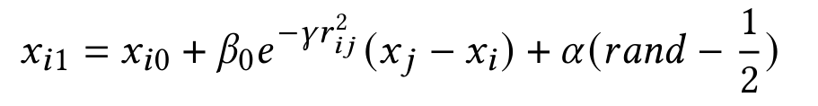
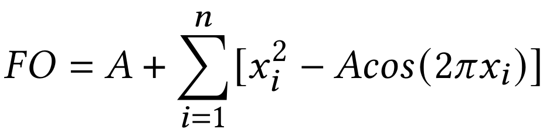

En este articulo de investigación se hablará de un breve resumen de las evoluciones del algorítmo de optimización por enjambre de luciernagas en los recientes años, y como podremos aplicar este algorítmo en la optimización de una red neuronal.
Redes Neuronales, Optimización, Enjambre de Luciérnagas, Inteligencia Artificial, Aprendizaje Supervisado, Selección Natural, Algoritmos Genéticos.
Optimizar, buscar la eficiencia y eficacia sobre todo, es un arte
que no solo mejoró la calidad de vida de una considerable cantidad
de personas en el mundo, sino también generó varias posibilidades
de evolución de la tecnología.
Optimización por enjambre de luciérnagas, es un algoritmo presen-
tado por primera vez por Yang X en 2009 [20], que es un algoritmo
metaheurístico [12], [8], Inspirado en la naturaleza [4], [5], utilizado
en varias áreas, como en medicina [18][11], en deep learnings como
[16], así también en softwares y optimizaciones como [7][2].
En esta investigación nos enfocaremos en los ultimos avances que
presentó el algoritmo de optimización, y así también basado en eso,
ingeniarnos una aplicación en el área de la inteligencia artificial, y
probar dicho algoritmo en la optimización de la red.
Es un método de optimización estocástico multidimecional, inspirado a la naturaleza de las luciérnagas, y la luminosidad. Es un algoritmo calificado como una rama de la inteligencia de enjambre. Surgio en 2009 a manos de Yang X. En los últimos años el algoritmo de luciérnagas ha sido aplicado en distintas soluciones como:
Método de la inteligencia artificial que enseña a las computadoras a procesar datos de una manera que está inspirada en la forma en que lo hace el cerebro humano. Utilizado ultimamente en detecciones de patrones que es pueden observar en los artículos [10] y [1] así como en detecciones en transtornos depresivos [13] y en más áreas.
Es un método utilizado por muchas personas debido a su capacidad de resolver los problemas teniendo en cuenta muchos factores y con un alto nivel de versatilidad.
En las redes neuronales van optimizando su comportamiento por medio del Descenso por Gradiente, lo que nos dió una duda de: ¿Porqué se utiliza Descenso por Gradiente y no otra forma de optimización?
Lo que investigaremos en este articulo por medio de la aplicación de el algoritmo de optimización por enjambre de luciérnagas y la comparación con el Descenso por Gradiente.
Es una herramienta basada en el proceso de selección natural para obtener posibles soluciones a los problemas.
La optimización basada en enjambres de luciérnagas, esta sujeta en 3 reglas, las cuales son:
En cuanto a pseudocódigo, es de la siguiente manera [20]:
Estas luciernagas se atraen, con una Luminosidad, que en este caso es lo mismo que la Funcion Objetivo, más eficiente en el mapa carteciano, con la formula

Siendo xi0 el lugar inicial de la luciernaga, y xi1, el lugar despues de que la luciernaga i se acerca a j, tendriamos cuenta que β0e-γ2ij se refiere a la formula gausseana de la ley del cuadrado a la inversa aplicada a la luminosidad de una luciérnga y (xy-xi) la distancia entre las luciernagas, en esa sección es utilizada para hallar que tanto la luminosidad va a afectar al espacio xi0 inicial, tambien teniendo en cuenta, el α, que determina que tan fuerte afecta el factor aleatorio en los pasos.
En los últimos años, este algoritmo fue utilizado en varias áreas como:
Teniendo en cuenta este ciclo, que se repite hasta alcanzar el máximo número de iteraciones y su naturaleza de acerecarse a lo más optimo, quise aplicar este algoritmo a un aprendizaje de una red neuronal, pero, ¿de qué forma?
"Las redes neuronales, concisten en simples procesadores, conectados, llamados neurones, produciendo una secuencia de activaciones de funciones con valores reales. los neurones de entrada son activados a partir de lo percivido en el medio ambiente, y las otras neuronas se activan a partir de los valores resultados por los otros neurones en contacto." - menciona Scmidhuber en su articulo de resumen sobre las redes neuronales [14]. Este algoritmo interesante e innovador, es utilizada en varias áreas que necesitan clasificaciones más complejas que lo normal, como en procesado de imágenes donde normalmente es mucho más difícil diferenciar los atributos con solo simple lineas [19].
En las redes neuronales existe un proceso llamado "backpropagation", que se refiere a la propagación de los errores a los nodos de forma inversa para que estos puedan modificar los valores de los pesos de cada conexión, para poder acercar el valor output a lo ideal. En este proceso, los neurones, van reciviendo los errores, digamos E0 en el output, pero, ¿cómo estos se van propagando?
Como podemos ver en la figura 1, por cada neurona nx, digamos en este momento, recive inputs In, pesos wxy y un bias bx, ademas de esto, los neurones tienen una función de activación que ellos ponen a los valores obtenidos para restringir los valores. En nuestro caso, utilizaremos el "ReLu" que simplemente es la aplicación de max(0, (∑(Iy * wxy) + bx)), en nuestro caso.
En el backpropagation, con el Error E que se obtuvo, el neutron de output n5 recive 2 Inputs, que son los resultados de n3 y n4 con pesos W53 y W54, respectivamente. hablando en modificar un valor, tambein debemos hablar de las diferencias de los valores que ocurren al cambiar algun valor de peso, o bias, que son los factores que nosotros si podemos modificar. Siendo que:
O = max(0, ((n3 * W53 + n4 * W54) + b5))
La formula para hallar el output y suponemos que existe la respuesta deseada R, de las cuales utilizando la formula de MAE, simplificandolo en un O y un R, podemos obtener el error de la siguiente forma:
E = (R - O)2
Siendo E el error de la iteración, podemos propagar esto a travez de los neutrones. siendo δE la diferencia que se quiere obtener, debemos saber que cambios ΔC tenemos que efectuar en los valores, note que ΔC es la lista de los cambios que se deben efectuar en los atributos W y b, tenemos que lo que buscamos es \(\frac{\delta E}{\Delta C}\). Y esto podemos ampliar concatenando las diferenciales en cadena. Siendo:
Observandolo de esta manera, segun los cambios en los pesos o biases de los anteriores, se puede hallar la diferencial de que tanto cambia el error. Ya que esto se puede propagar hasta el imput si consideramos ΔC como la lista de todos los w y b de las conexiónes entre los neurones, podemos hallar el cambio del error necesario modificando los valores.
El FA (Firefly Algorithm o Optimización por enjambre de luciérnagas), es caracterizado por el comportamiento de cada uno de los vectores, referenciados como luciérnagas, acercandose lentamente a los valores que tiene el mejor resultado, atravez de la FO, ahora, ya que en este modelo de red neuronales, lo que queremos minimizar es el error, la cual si ponemos como FO a el proceso de obtener a O, podemos utilizar una población considerable de luciérnagas para obtener los datos ideales. para el O.
El FA es pesado en terminos computacionales tal que solo para conseguir una iteración o generación, debe recorrer todos las población por toda la población, mejor dicho va a ser O(p2) siendo p la población del enjambre. para evitar que se desperdicie tiempo en los calculos de algunas luciérnagas que no aportan mucho en el algoritmo, le puse un life-span, una "vida util" a las luciérnagas, de esta forma teniendo un máximo valor tolerable, Tmax, si una luciérnaga sobrepasa el valor de éste, multiples veces, esta luciérnaga morirá y dará espacio para luciérnagas de una nueva generación generado por algoritmos genéticos.
Para que los enjambres esten trabajando en una máxima eficiencia y eficacia, tenemos que seleccionar a los más eficientes, de forma que si sobrepasan el umbral de Tmax, tengan una vida menos, cuando ellos se quedan sin "vidas", ellos mueren y seden espacios a generaciones "más eficientes", que quiere decir, es que utilizamos los algoritmos genéticos y sacamos los valores del vector de el mejor y el segundo mejor, aleatoriamente para crear una luciérnaga que contenga génes más eficientes.
Para el testeo de la teoría, utilizaremos el lenguaje python y programaremos de 0 los componentes necesarios para el testeo, los valores seran expresados en un grafo de matplotlib y los valores van a estar procesados utilizando las librerías numpy.
El FF o Firefly, es un objeto que replica un vector de datos, o una luciérnaga en el grupo, tiene los valores del vector, o los atributos C, y los datos de entradas D, una función Objetivo FO, una vida máxima, y un umbral de tolerancia, Tmax.
El FFA, es un objeto que maneja toda la parte de las iteraciones, matlibs y los ciclos de vidas de las luciérnagas (FF). tiene los valores necesarios para calcular el FA, y tambien los valores como la máxima cantidad de iteraciones.
En este caso, utilizaremos los datos D = [75.0, 12.5] y la red neuronal de la figura figura 1. Para este caso, tenemos que tomar en cuenta que nuestra FO es bastante complejo, ya que tiene que calcular en su vector C, 15 valores. incluyendo varios pesos y biases. La FO, en este caso, sería lo siguiente, Siendo que I1 e I2 los inputs,
On1 = max(0, ((I1*W1I1 + I2*W1I2) + b1))
On2 = max(0, ((I1*W2I1 + I2*W2I2) + b2))
en la próxima capa:
On3 = max(0, ((On1*W31 + On2*W32) + b3)) On4 = max(0, ((On1*W41 + On2*W42) + b4))
y en la ultima capa,
On5 = max(0, ((On3*W53 + On4*W54) + b5))
lo cual todo este proceso es el cálculo de las FF para hallar su luminosidad.
En efecto, el mecanismo trabaja considerablemente bien ya que promedia un 65 iteraciones (redondeado), para conseguir el minimo error considerable que es MAE < 0.00001 .
Vamos a ejecutar el programa 2 veces, con \(p=20, \alpha=0.5, gamma=0.001, T_{máx}=0.00001\).
En el caso de la figura figura 2, se ha culminando con :
W1I1=-0.44944584, W1I2=-1., b1=-0.3084703
W2I1=0.75759575, W1I2=1., b1=0.76806547
W31=-0.78746101, W32=0.22757309, b3=-0.19561072
W41=-0.84307831, W52=0.74153965, b4=-0.28235573
W53=1., W54=0.63139311, b5=0.25038155
Con:
MAE=2.4712424674228674e-06
En el caso de la figura figura 3, se ha culminando con :
W1I1 = -0,20669995,W1I2 = 0,05972356,b1 = -0,38686369
W2I1 = 0,60723874,W2I2 = 0,84279182,b2 = -0,43296255
W31 = -0,87029076,W32 = 0,83567679,b3 = 0,07652005
W41 = 0,60406214,W42 = 1.,b4 = -0,59154027
W53 = 0,65797163,W54 = 0,334031,b5 = -0,03343556
Con
MAE = 7,993634146033143e - 06
donde podemos observar que el algoritmo está pudiendo solucionarlo en menos de 50 iteraciones, esto
cambia drásticamente dependiendo de los valores que damos.
Por ejemplo, la población p es un factor muy importante en esta investigación, ya que cuando la cantidad de población es mayor, el tiempo de computo escala de forma cuadrática, en cambio, lo que asegura es que por la cantidad de población tenderá a tener unas luciernagas que si ya esten en rangos aceptables, ya que sus vectores son generadas de forma aleatoria, que acelerará muchisimo más el proceso de encontrar el óptimo.
El α es una variable que podemos cambiar, un hiper parametro, que afecta al nivel de cambios producidos aleatoriamente en los movimientos sin importancia de la luminosidad, Este numero α tiene una conducta muy interesante, cuando empezamos con α = 1.0, por ejemplo, los valores tienden a cambiar muchisimo, en cambio cuando α tiende a 0, el cambio no es para nada repentino y solo se mueven lentamente a la luminosidad más fuerte. Esto no es tan difícil entender, solo lo interesante empieza cuando α tiende a 0, y la p es mayor, el computo suele ser muchas veces más rápido, esto se puede entender que hay muchísimos puntos aleatorios que estirarán a la luciérnaga de forma que cambiará muchos pasos en una iteración que podrá mejorar el vector del FF en veces más de lo normal, pero en cambio si no hay FF con lindos datos, normalmente computa el problema en 5 veces mas lento de lo normal. Por esto, tener una poblacion y un alpha bien optimizado puede mejorar la función de este algoritmo
Cuando hablamos de optimización en una red de neurones, no podemos obviar la comparación entre el metodo más utilizado, que es el Descenso por Gradiente (DpG), comparando los 2 algoritmos, generando datasets totalmente aleatorios en cada ejecución, obtenemos varios puntos interesantes. En simple vista, podemos observar desde la figura 4 hasta la 7 que mas o menos existen 3 casos posibles
esto suele entenderse que le hace una buena competencia, pero en realidad no es el caso, se nota muchísimo la ineficiencia, digamos del FA en la aplicación.
Primero, antes que nada, se nota muchisimo la diferencia en tiempo de computo, FA tardando mas del doble comparando con DpG, en tanto a optimización, se nota que el DpG, por lo pequeño que sea el paso, esta claramente optimizando cada vez su peso, pero la otra mitad, el FA no se nota una mejora desde un umbral, que podemos entender que se estanca en un mínimo local,ya que tiende a quedarse en la altura más eficiente obtenido inicialmente en ek algoritmo. En los casos que FA gana a DpG, el FF del algoritmo ya mostraba una eficiencia más alta en el algoritmo, pero, en este paso tambien, ayuda a mostrar una ventaja que DpG tiene sobre FA. Explicándolo detalladamente, viendo la figura 4, se ve que tiene el mismo nivel de MSE, pero en realidad, si existía más iteraciones, es muy probable que DpG le halla superado a FA. como en la figura 5.
En esta sección probaremos el programa con una red neuronal de 50 inputs, 100 neurones en la capa 1, 50 en la capa 2 que produce un Output. Los valores son generados de forma totalmente aleatoria. El resultado de una prueba se puede observar en la figura 8.
Podemos observar que obtenemos los mismos resultados que en una funcion de computo bajo, en todos los aspectos podemos decir que el metodo de DpG le supera al FA. En cuanto a tiempo de computo, es mucho mas rapido y seguro el DpG, tambien que podemos ver que el error de DpG tiene una optimización efectiva, y en comparación, FA encuentra un optimo, y le dificulta encontrar un valor mejor que este, y por la naturaleza que todos se juntan al "mas optimo"del enjambre, hace que todas las luciernagas se acerquen a ese punto, haciendo que mientras que alguna luciérnaga pase por un punto mejor por suerte, el metodo siempre va a ser peor en este tipo de trabajos.
A través de las pruebas anteriores, podemos notar facilmente que DpG es superior en todos los aspectos frente a FA, esto es por varios factores, por ejemplo, hablando de la eficiencia y rapidez de computo, por la naturaleza el FA que calcula la funcion por cada luciernaga, es más lento que un DpG, pero por ejemplo en una optimización de una función con muchos óptimos locales, como la de Rastringin.
Que graficada, es observable como esta en la figura 9, tiene muchos óptimos locales. Lo que hace que sea dificil encontrar el óptimo local de la función. El óptimo global de la funcion es FO = 0, pero es dificil para un metodo como descenso por gradiente sin alguna modificación, encontrar dicho óptimo.
Cuando ejecutamos ambos metodos para la optimización de la función, obtenemos el resultado de la figura 10, por conveniencia, se hace que ambos metodos paren cuando llegan a un umbral de 0.0001 en FO. podemos observar que en este caso, el FA, fué más eficiente en tanto a rapidez de encontrar el valor, pero cuando hablamos de tiempo, el DpG es mucho más eficiente en la aplicación en la vida real.
La Optimización por enjambre de luciernagas (FA), es una tecnología
innovativa, que nos permite optimizar las variables de una función, minimizando el error entre el resultado
de
la funcion con el resultado esperado.
A traves de esta investigación, logramos profundizar el conocimiento
sobre el algoritmo, así también su utilización en el area de Inteligencia artificial, aplicandolo en la
optimización de los pesos de los perceptrones, y comparar su rendimiento con el algoritmo más utilizado para
el
area que es el Descenso por Gradiente (DpG).
Logramos obtener los fuertes del algoritmo, asi como sus
debilidades, lo más notable era que el FA, debido a su alto tiempo de computo, utiliza una cantidad elevada
de
recursos, comparado con el DpG, y no es que sea mejor su rendimiento. lo que hace que podemos decir que no
es
rentable sustituir el DpG por el FA.
Cabe destacar que el FA, es mejor en otros aspectos que el DpG, como
podemos ver en la comparación, el FA, es mas eficiente cuando hablamos de optimizaciones de funciones de
bajo
nivel de computo, superandole en rendimiento, pero no en tiempo de ejecución al DpG.
En cuanto a Selección
Natural y el algoritmo genético en el FA, fue eficiente y no eficiente, mejor dicho, depende de la suerte,
ya
que los hijos de las "mejores" luciérnagas, toman los datos de forma aleatoria de los padres, puede crear
una
generación de luciernagas no tan buenas, que puede afectar negativamente al algoritmo.
En Síntesis, el FA, es
un algoritmo de optimización muy bueno, dependiendo del área que se utiliza, y los parámetros que le recibe,
lo
que hace importante el proceso de validación para decidir buenos hiperparametros para el algoritmo.